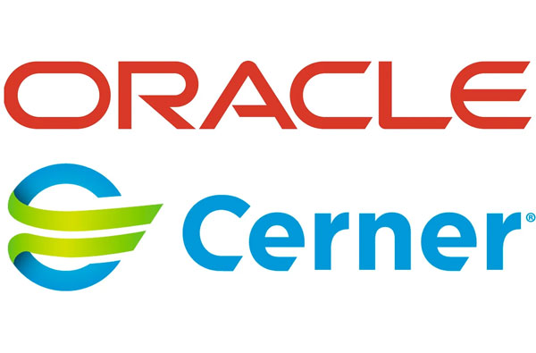
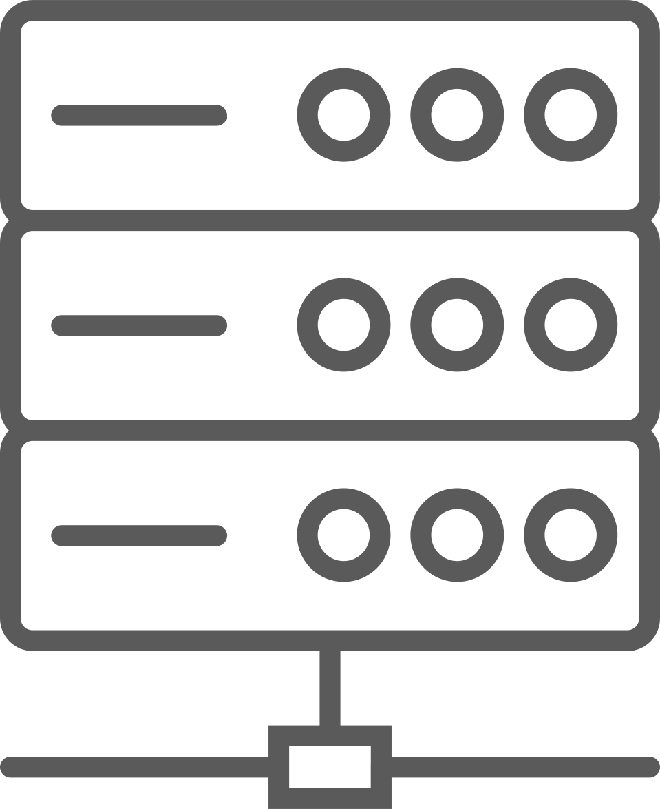
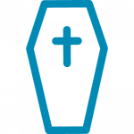

Meldevorgänge kosten Kliniken viel Zeit, wenn sie analog durchgeführt werden. Vertama entwickelt digitale Produkte zur schnellen und einfachen Datenerfassung für automatisierte Meldungen. Unsere Produkte sind cloudbasiert und benötigen weder Installation in Ihrem System noch Datenkompetenz beim Anwender.
Unsere Produkte sind im SAP-Store erhältlich.

Meldeprozesse as a Service (MaaS)
Digitale Ende-zu-Ende Lösungen für die Kommunikation zwischen Krankenhäusern und Behörden
Die im Infektionsschutz- und Personenstandsgesetz geforderten Meldungen und Anzeigen können durch unsere Produkte effizient und komfortabel abgesetzt werden. Digitale Datenermittlung der Meldungsinhalte, Versand mit einem Klick und automatisierte Ablage der Sendebestätigung in der Patientenakte minimieren die händischen Aufwände.
Sicherheit hat Priorität: Unsere Lösungen bieten höchste Sicherheitsstandards für die sensiblen Patientendaten, die außerhalb ihrer Infrastruktur nicht gespeichert werden.
Vertama-Produkte können mit geringem Aufwand implementiert werden und sind so kurzfristig produktiv verfügbar. Alle nötigen Informationen werden aus Administrator- und Anwender-Sicht mitgeliefert und intuitiv verständlich vermittelt.
Meldeprozess an die Behörde
Datenübernahme
Generierung des Meldebogens gemäß Landesverordnung

Eindeutige Zuordnung des Addressaten
Auslieferung an Gesundheits- und Standesämter, Gerichte und RKI (DEMIS / DIVI)
Unsere Produkte:
Unsere Produkte:
ELIM – Elektronische Infektionsmeldung
Meldungen müssen auch nach Einführung von DEMIS parallel per Fax und E-Mail abgesetzt werden. Das bedeutet doppelten Aufwand für die Kliniken, da verschiedene Meldewege eingehalten werden müssen. Verfügbare automatisierte ELIM Meldevorgänge für Covid 19 , Influenza, MRSA, Clostridium, MRGN, Echinokokkose, Malaria, Syphilis, HIV, HUS EHEC, Hospitalisierung (§ 6, 8 und 9 des IfSG) mit einer automatisierten Dokumentation für die Patientenakte.
BELIM – Digitale Bettenbelegmeldung
Automatischer Aufruf der Daten für die Bettenbelegmeldung als Mittagsmeldung aus dem KIS. Die Geschäftsleitung kann über eine vorausgefüllte Meldemaske die Daten der Bettenbelegmeldung einsehen und bei Bedarf korrigieren. Nach vollständiger Implementierung erfolgt dies auch vollautomatisiert. Die Bestätigung des Meldeeingangs wird an die Klinik übermittelt und automatisch abgelegt.
DIVI – Intensivbettenmeldung
DIVI übernimmt, ähnlich wie BELIM, Meldungen zu der Kapazität und Auslastungen ihrer Intensivstation. Unsere innovative Lösung digitalisiert und automatisiert die Datenerfassung und -übermittlung an das RKI mittels REST-Schnittstelle. Damit wird die manuelle Bearbeitung auf ein Minimum reduziert.
DiGG – Digitale Geburtsanzeige
Unsere digitale Geburtsanzeige bietet eine erhebliche Entlastung für die Meldeprozesse im Kreissaal. Mittels eingerichtetem Parameteraufruf im KIS werden gemäß gesetzlicher Vorschrift einmal täglich die Daten an das jeweilige Standesamt übertragen. Nicht im KIS vorhandene Daten werden digital ergänzt um anschließend mit dem verbindlichen OSCI-Standard über die digitale Plattform übermittelt zu werden. Nach jeder erfolgten Meldung wird eine Empfangsbestätigung an die Krankenhäuser ausgeliefert.
DiGT – Digitale Todesanzeige
Die digitale Todesanzeige bietet eine erhebliche Entlastung für die Meldeprozesse der unterschiedlichen Todesanzeigen (vorläufige Feststellung des Todes, Todesbescheinigung, Obduktionsschein, Leichenpass). Mittels eingerichtetem Parameteraufruf im KIS werden gemäß gesetzlicher Vorschrift einmal täglich die Daten an das jeweilige Standesamt übertragen. Der Meldeprozess wird jeweils durch die Auslieferung einer Empfangsbestätigung an die meldenden Einrichtungen quittiert.
DuBA – Digitale Behörden-Anträge
Die Kommunikation zwischen Krankenhäusern und Gerichten oder Behörden z.B. zur Beantragung von Unterbringungsanweisungen u.ä.unterliegt strengen Sicherheitsansprüchen. Für alle Körperschaften des öffentlichen Rechts steht mit beBPo (besonderes elektronisches Behördenpostfach) ein spezielles Addressier- und Verschlüsselungsverfahren zur Verfügung, das unsere Lösung ähnlich der Meldeverfahren an Demis mit der KIS-Infrastruktur verknüpft.
Unsere Kundenstimmen:
Unsere Kundenstimmen: